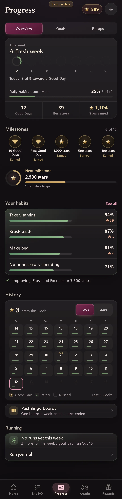

Progress · Overview (this week story, next milestone, goals, insights, activity, running, milestones)
- Area
- Progress
- Screen 19 of 65
- progress-overview
- Capture
- full scrolling page (430×2494), demo time 15:00, sample data
- Image
- img/19-progress-overview.webp

Text on this screen
Progress Overview Goals Recaps 0 M T W T F S S This week No Good Days yet this week Today: 3 of 8 toward a Good Day. Last week 2 Good Days M T W T F S S This week so far M T W T F S S Daily habits done Mon 25% 3 of 12 14 Good Days 38 Best habit streak 1,091 Stars earned Calendar 2 Good Days in 5 weeks M T W T F S S 21 22 23 24 25 26 27 28 29 30 OCT 1 2 3 4 5 6 7 8 9 10 11 12 13 14 15 16 17 18 19 20 21 22 23 24 25 Good Day Partly Missed Last 5 weeks Milestones 6 of 10 Next 2,500 stars 1,409 stars to go Stars earned 1,091 so far First 100 500 1,000 2.5k 2,500 Good Days 14 so far First 10 50 50 Good Days in a row 1 so far 3 3 7 7 Your habits See all 90 Take vitamins 2 days 84 Make bed 10 days 83 Brush teeth 68 No unnecessary spending On the rise: Floss Running M T W T F S S 0 runs this week 0.0 km 5K not yet Run journal Past Bingo boards Each week as it ended